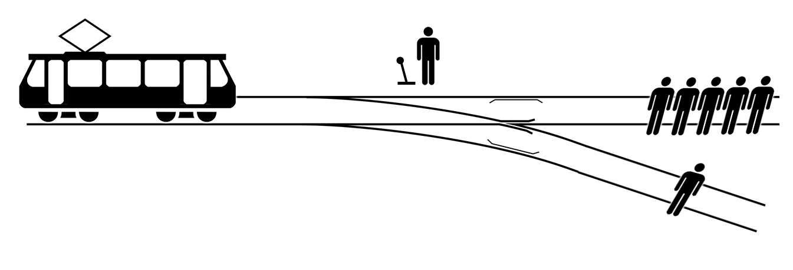

5. gaia · Filosofoaren oinarrizko tresnak
Diskurtsoa subirano ahaltsu bat da, gorputz txiki-txiki eta erabat ikusezinaz obra guztiz jainkozkoak burutzen dituena: beldurra geldiaraz dezake, nahigabea kendu, poza sortu eta errukia handitu.
—Gorgias Leontinoikoa, Helenaren laudorioa, 8 · Clauderen itzulpena, grezieratik
Eta zein izaerakoa naizen? Zerbait oker diodanean ezeztatua izatea gustura hartzen dutenetakoa, eta norbaitek ezer faltsurik esango balu gustura ezeztatzen dutenetakoa ere bai, hala ere ez zait desatseginago ezeztatua izatea ezeztatzea baino, lehenengoa on handiagotzat jotzen baitut, norbera gaitz handienetik aldentzea beste norbait aldenduaraztea baino on handiagoa den heinean.
—Platon, Gorgias, 458a · Arrojeriaren itzulpena (Klasikoak, 2005)
§17 · Metodo filosofikoak
Denok ditugu ezagunak aritmetika eta matematikako klasean problemak ebazteko erabiltzen ditugun formulak. Taula periodikoa erabili dugu kimikako klasean molekulak ulertzeko. Testu-iruzkinak ere egin ditugu hizkuntzako klasean, garai bateko literaturari buruz eta baliabide literarioei buruz dakiguna konbinatuz olerki bat aztertzeko. Zalantzarik gabe, ingelesezko aditz irregularren zerrenda ikasiko zenuen, eta hizkuntza horretan gutunak idatziko zenizkion dendaren bati, bertan erositako artikuluren batek emandako emaitza txarraz kexatzeko.
Baina nola egiten da Filosofia? Zertan datza jarduera filosofikoa? Gogoratu Filosofia honela definitu dugula: «Filosofia behaketaz, esperimentazioz nahiz definizioen edo axiomen mendeko froben bidez erantzun ezin ditugun galderei zorroztasunez erantzuteko proiektua da». Matematikariek, kimikariek eta hizkuntzalariek, hain zuzen, filosofoen kontrako galdera motari erantzuten diote: behaketaz, esperimentazioz edo axiomen demostrazioz erantzun ahal diegun galderei. Filosofia egiteko, berriz, argudiaketa arrazionala erabili behar dugu tresna bakar gisa.
Zer den metodo bat. Beraz, funtsean, filosofo bat eseri1 eta pentsatzen jartzen da. Baina, batez ere, argudiatu egiten du. Hau da, bere ideiak forma koherenteetan egituratzen ditu, era metodikoan. Metodo bat gauzak egiteko modu bat da: helburu bat lortzeko sistematikoki erabiltzen den erabaki edo ekintza multzo bat.
Bere historian zehar, Filosofiak hainbat metodo erabili ditu bere argudioak eta ideiak egituratzeko. Jarraian, haietako batzuk ikusiko ditugu. Kontuan izan metodo batzuek, fenomenologikoak esaterako, Filosofiaren korronte osoak sortu dituztela, baina beste filosofo batzuek metodo bat baino gehiago erabili dituztela, beren ideiak garatzeko behar zituzten heinean. Nolanahi ere, kontua da kontzeptu hauetako batzuk ezagunak egiten hastea zaizkizula, aurrerago agertuko baitira ikasturtean, eta han garatuko baititugu, behar ditugun neurrian.
Eszeptizismo metodologikoa edo zalantza kartesiarra. Descartes (1596-1650) nahastuta zegoen ikasketen amaieran, irakasleek era guztietako ideiak eta haien kontrakoak irakatsi baitzizkioten. Egiazko ezagutza aurkitzea hartu zuen xede. Baina nola identifikatuko zuen ideia egiazko bat, aurkitzen zuenean? Haren irtenbidea zalantza tresna gisa erabiltzea izan zen: sistematikoki baztertzea, jada faltsua balitz bezala, zalantzarik egin dakiokeen guztia, eta ikustea zer geratzen den zutik. Haren metodoaren arazoa da zutik geratzen dena oso-oso gutxi dela. Bera ondorio ospetsu batera iritsi zen: «pentsatzen dut, beraz, banaiz»; oso ondo dago, baina ez digu gauza handirik esaten nolakoak garen eta nola jokatu behar dugun.
Metodo geometrikoa. Beste arrazionalista batzuek, Baruch Spinozak (1632-1677) esaterako, kontrakoa egin zuten: zalantzarik gabekotik hasi. Spinozak bere Etika geometria-liburu baten moduan idatzi zuen —definizioak, axiomak eta demostrazio kateatuak—, eta hortik ondorioztatu zituen Jainkoari eta askatasunari buruzko bere tesiak. Dena axioma batzuetatik dago zintzilik, eta beste bati agian ez zaizkio begi-bistakoak irudituko.
Metodo fenomenologikoa. Edmund Husserlek (1859-1938) agertzen zaizunetik hastea proposatu zuen, agertzen zaizun bezalaxe. Mundua ikusten duzun bezalakoa den eztabaidatu baino lehen, eztabaidaezina da horrela ikusten duzula. Fenomenologoak parentesi artean jartzen du hori hor kanpoan existitzen den, eta esperientzia bera deskribatzen du arreta osoz: nola ematen zaizun melodia bat edo hagineko min bat. Zailtasuna da deskribatzea, jada bazenekiela uste zenuena barruan sartu gabe.
Berifikazionismoa eta faltsazionismoa. Hipotesi bat probatzeko bi modu kontrajarri dira. Berifikazionismoa delakoa haren aldeko behaketak batzen joatean datza. Sen onekoa dirudi: zenbat eta behaketa gehiagok babestu hipotesi bat, orduan eta egiaztatuago edo frogatuago egongo da hipotesi hori, ezta? Bai. Eta ez, oso gutxitan beha baititzakegu kategoria jakin bateko instantzia guztiak. Beleei buruz baieztatzen dugun edozer, behatu ditugun bele haiek bakarrik balioztatzen dute. Baina ezingo ditugu inoiz behatu izan ziren beleak, ezta gu hil ondoren izango direnak ere; beraz, bele guztiez hitz egingo dugu denak ikusi gabe. Demagun, esaterako, bele guztiak beltzak direla. Zure esperientzia pertsonalak behaketa hori berresten duela dirudi. Orain, egin zeure buruari galdera hau: zenbat bele ez-beltz aurkitu behar dituzu bele guztiak beltzak direla dioen baieztapena baliogabetzeko? Erantzuna erraza da: bat. Horrela, bizitza osoa eman genezake bele beltz gehiago bilatzen, gure baieztapena indartzeko… edo bele ez-beltzak aurkitzea errazagoa litzatekeen egoerak bilatzen saia gintezke. Horretantxe datza, hain zuzen, Karl Popperren (1902-1994) faltsazionismoa: baieztapenen kontraadibideak bilatzean, bide azkarragoa eta seguruagoa baita hipotesi faltsuak baztertzeko (§64).
Analisi kontzeptualaren metodoa. Kontzeptu bat osatzen duten piezetan deskonposatzean datza, hura aplikatzeko zehazki zer behar den jakiteko. Zer behar da norbaitek zerbait badakiela esateko? Nahikoa al da asmatzea, ala arrazoiak ere behar dira?
Sen onaren metodoa. Ikasturte honetan zehar askotan azpimarratuko dugu Filosofiak sarritan sen ona desafiatzen duela2. Horrek ez du esan nahi ez ditugunik sinesmen asko egiazkotzat hartzen esplizituki argudiatu gabe, baita filosofoek ere.
Sen onaren metodoa sen oneko sinesmenetatik abiatzen da, gero Filosofiaren berezko zentzu kritikoa aplikatzeko. Gogoratzen al duzu nola iritsi zen Descartes egia gutxi batzuetara —existitzen dela, esaterako—, baina ez zirela oso erabilgarriak, oso abstraktuak eta gure esperientzia arruntetik oso deskonektatuta daudelako? Bada, sen onaren metodoak muturreko hori saihestu nahi du, hartan erortzen baitira filosofoak beren ideiak hainbeste sofistikatzen dituztenean, non ideiek errealitatearekiko kontaktua galtzen duten.
Jakina, Filosofia sen ona kritikatzen tematzen bada, ez da gustuz, ezta esnobismoz ere: sen ona askotan oker dagoelako baizik, eta sormen handia behar delako errealitatearen azalpen zuzenak aurkitzeko. Zentzumenen inpresio hutsari erreparatzen badiogu, «eguzkia atera egiten dela» behatuko dugu egunero. Ondo dakigu Lurra dela bere buruaren gainean eta Eguzkiaren inguruan biratzen dena, eta horrek ematen digula eguzkia ateratzen delako sentsazioa, hala ez den arren.
Bestalde, sen ona ez da absolutua. Talde bateko kide gehienek ideia bati eusteak ez du esan nahi beste talde batzuetan ideia alternatiborik edo bestelako adostasunik ez dagoenik. Kasu horietan, zeinetatik abiatuko gara?
Hizkuntza arruntaren filosofia. Aurrekoaren ahaidea da, baina hitzei begira. J. L. Austinek (1911-1960) eta Oxfordeko filosofoek zioten arazo asko sortzen direla termino bat erabiltzen den tokitik atera eta jada ezer esan nahi ez duen arte tenkatzetik. Askatasuna zer den galdetu baino lehen, komeni da begiratzea noiz esaten duzun norbaitek aske jokatu zuela.
Pentsamendu-esperimentuak. Filosofoek ez dute laborategirik, baina badute esperimentatzeko beren modua: kasu bat imajinatzen dute, aztertu nahi dutena bakarrik egon dadin jokoan bezain garbia, eta zer iruditzen zaien begiratzen dute. Asko erabiltzen dira etikan.
Unitatea ireki zuen tranbiaren dilema horietako bat da, eta erabilienetakoa.

Pentsamendu-esperimentua den aldetik, ez du harreman zuzenik errealitate behagarriarekin. Ez da inoiz horrelakorik gertatu eta, espero dezagun, inor ez da praktikan egiten saiatuko. Baina irudimenezko eta arrazoizko esperimentu hutsa izan arren, balio digu ikertzeko, eztabaidatzeko eta irtenbide etikoak bilatzeko halako dilemetan, non kaltetutako pertsona kopuruak alda baitezake ekintza zuzenari buruz ematen dugun justifikazioa. Pentsamendu-esperimentu xume honek eta haren aldaera ugariek ikerketa filosofikoan laguntzen dute, baina beste diziplina batzuetan ere erabiltzen dira.
Eztabaida filosofiko batean, iraganeko kasuak ere azter ditzakegu. Jada gertatu den eta, beraz, aldatu ezin dugun gertaera baten aurrean, galdetzekoa da: zer beste modutan joka genezakeen? Zer ondorio izango zituen beste modu batera edo bestera jokatzeak?
Hausnarketazko oreka. Joan-etorri bat da. Bi gauzarekin hasten zara: arrazoizkoak iruditzen zaizkizun printzipio orokor batzuk eta nahiko ziur zauden judizio zehatz batzuk. Ia beti egiten dute talka, printzipioak behartzen zaituelako kasu batez sinesten ez duzun zerbait esatera. Bi irtenbide daude, eta biek balio dute: printzipioa ukitzea, kasu hori sar dadin, edo zure judizioa oker zegoela onartzea eta askatzea. Joan eta etorri zabiltza, printzipioek eta judizioek elkarri muturrekoak emateari uzten dioten arte. Puntu hori da hausnarketazko oreka delakoa, eta ez dizu agintzen asmatuko duzunik: oraingoz, sinesten duzunak batera eusten diola, besterik ez. Nelson Goodmanek (1906-1998) deskribatu zuen, logikaren arauetarako, eta John Rawlsek (1921-2002) gaur egun justizia eztabaidatzeko erabiltzen den metodo bihurtu zuen3 (§134).
Metodo pragmatikoa. Filosofia egiten dugunean ideien eremuan mugitzen gara, batzuetan errealitatetik oso urrun; gogoratu Descartes, eta baita pentsamendu-esperimentuak ere. Charles Sanders Peircek (1839-1914) arau bat proposatu zuen ez galtzeko: ideia baten zentzua oso-osorik dago hura egiazkoa izateak ekarriko lukeen alde praktikoan (§48).
Metafisikari batek errealitateari buruzko teoria bat proposatzen badu, filosofo pragmatistak esango dio: zer ondorio praktiko eta behagarri ditu zure teoriak? Eta ondorio horiek dauden ala ez, egiazkoa edo faltsua den erabakiko du.
Metodo transzendentala. Zerbait posible izan dadin zerk gertatu behar duen galdetzen du. Kantek (1724-1804) honela erabili zuen: mundua ezagutzen dugula ziurtzat jotzen dugunez, galdera bihurtzen da zer jarri behar duen gure buruak berak esperientzia posible izan dadin (§54). Zerbait dakizula baieztatzen baduzu, zer gertatu behar da nahitaez zuk horri buruzko ezagutza lortu ahal izateko?
Metodo esperimentala. Zerrendako berriena da: 2001 inguruan abiatu zen, eta filosofia esperimentala deitzen zaio. Esan genuen jada gure Filosofiaren definizioan behaketa hutsez erabaki ezin genituen auziez arduratzen zela hura, baina metodo honek horixe bera egiten du: bulegotik atera eta datuak biltzen ditu, psikologiak eta zientzia kognitiboek bezala.
Mekanikarik ohikoena da kasu bat jende askori planteatzea, zer iruditzen zaion galdetzea eta zer ateratzen den ikustea4.
Bere alderdi negatiboan, metodo hau Filosofiaren posizio eta mugimendu tradizionalak desafiatzen saiatzen da, erakutsiz pertsonen intuizioak beren kulturaren, generoaren edo etniaren arabera aldatzen direla. Hori horrela bada, zalantzan jarri behar ditugu teoria erlatibo horietan babesten diren erakundeak.
Bere alderdi positiboan, metodo honek Filosofia pertsonen intuizioetan oinarritu nahi du, eta ez filosofo profesionalenetan.
Metodo honen arazo handienetako bat da ez dugula zuzeneko sarbiderik pertsonen intuizioetara, eta badakigula galdetegietako erantzunak erraz gidatu eta manipula daitezkeela. Beste bat zabalik dago oraindik: argudiatu izan da hain arazo teknikoetara ohituta ez dagoenak ez duela erantzun fidagarririk ematen, eta erantzun horiek ezin dutela ordezkatu formazioa duen filosofo baten judizioa. Erantzuna profesionalak beraiek aztertzetik iritsi zen: haiei ere judizioa aldatzen zaie kasuak aurkezten zaizkien ordenaren arabera5; beraz, eztabaida ez dago itxita.
§18 · Argudiozko elkarrizketa
Argudiatzeko bi moduak. Filosofiaren definizioan bertan aurkitzen dugu haren funtsezko tresnak arrazoimena, arrazoiak eta argudiaketa direla. Argudiaketa horrek bi forma nagusi har ditzake:
- Argudiozko elkarrizketa edo eztabaida filosofikoa, zeinean kontzeptu edo gai batez eztabaidatuko baitugu bi pertsonaren edo gehiagoren artean, beste eztabaida mota batzuetatik bereizten duten irizpide batzuei jarraituz, edo
- disertazio filosofikoa, zeinean gaiak eta arazoak banaka esploratu eta ebaluatuko baititugu, eta haien alderdi ugariak idatziz jasoko (§19)6.
Argudiozko elkarrizketari dagokionez, elkarrizketa sokratikoa eta Jürgen Habermasen diskurtso idealaren baldintzak aurkeztuko ditugu.
Elkarrizketa sokratikoa
Sokrates (470-399 o.a.a.) historiako eragin handieneko filosofoetako bat da. Bitxia bada ere, ez zuen obrarik idatzi, uste baitzuen ideiak idatziz jasotzeak pentsamenduaren eta elkarrizketaren bizitasuna ezabatzen zuela.
Harentzat, pentsamendua solasean garatzen zen, elkarrizketan: hartan, bi solaskidek edo gehiagok kontzeptu filosofiko handien —Justiziaren edo Bertutearen7— definizio-aukera ugari esploratzen zituzten. Gainera, kontua da geutako bakoitzak elkarrizketari aurre egitea. Sokratesek beste atenastar batekin izan zezakeen elkarrizketa transkribatuta ikusteak ez liguke guri balioko, ez baikara ez bata ez bestea; beraz, beste ideia batzuetatik abiatzen gara, eta geure bide filosofikoa egin behar dugu.
Horrela, Sokratesek metodo bat proposatu zuen, elkarrizketarako modu arautu bat, solaskideak kontzeptuoi buruzko beren aurreusteak eta aurreiritziak baztertuz joan zitezen, eta kontzeptu horien definizio objektibo edo unibertsalen inguruko akordioetara irits zitezen. Funtsean, kontraesanetara daramaten hipotesiak ezabatzeko metodo negatibo bat da.
Solaskideetako bat baieztapen bat eginez hasten da. Adibidez: «bidezkoa da denok diru bera edukitzea». Solaskideak edo solaskideek zertan ez dauden ados esango lukete, denek beren argudioak agortu eta arrazionalki hobeak direnak aukeratu arte.
Gaur egun, elkarrizketa sokratikoa dilema moralei aplika diezaiekegu. Har dezagun, adibidez, unitatea ireki zuen tranbiaren dilema. Haren aurrean, gure solaskideei galdetuko genieke palankari eragingo lioketen ala ez, eta zergatik. Haien erantzunen aurrean, galdetzen jarraituko genuke. Batek esaten badu hobe dela bat hiltzea asko baino, eta, beraz, zalantzarik gabe palankari eragingo liokeela, galde geniezaioke: «Eta bigarren bideko pertsona zure ama balitz?». Kasu horretan hobe litzatekeela beste bostak hiltzea esango balu, agerian geratuko litzateke haren kontraesana, eta ikusi beharko genuke nola eta zergatik iruditzen zaion hobea bere ama salbatzea bost ezezagun salbatzea baino.
Lan hori egiten duten galderak ia beti sei berberak dira, eta komeni da eskura izatea:
- Zeri deitzen diozu zehazki hori? Jarri kasu bat.
- Nondik atera duzu? Zerk eraman zaitu handik honaino?
- Hori egia balitz, zer gehiagok beharko luke egia izan?
- Bururatzen al zaizu kasurik, zeure arauak zeuk sinesten ez duzun emaitza bat ematen duenik?
- Oker bazeunde, zertan igarriko zenuke?
- Eta arrazoi baduzu, zer aldatzen da?
Elkarrizketa sokratikoa posible izan dadin, ezinbestekoa da solaskideek egiaren bilaketan parte hartzeko asmo zintzoa izatea, eta prest egotea beren ideiak hobeekin ordezkatzeko, aurkezten zaizkienean. Hori oso zaila egiten zaigu, geure ideiekin identifikatzen baikara, eta iruditu ohi baitzaigu geuregan ideia faltsuak edo okerrak aitortzea ez dela ideia horien arazoa bakarrik, baita geure arazo pertsonala ere. Ideia okerrak izateak pertsona okerragoak egingo bagintu bezala.
Hizketa-egoera ideala (Habermas)
Solasaldi, elkarrizketa eta eztabaida guztiak ez dira berdinak. Elkarrizketa sokratikoarekin ikusten dugun bezala, eztabaida filosofiko batek irizpide batzuk bete behar ditu halakotzat jo dezagun.
Bide negatibotik: nola ez den eztabaidatzen. Ohiko eztabaidetan, gure asmoa ez da egiara hurbiltzea, ezta gure ideiak eta kontzeptuak hobetzea ere; gurea ateratzeko argudiatu ohi dugu. Saltzaileak bere produktua eros dezagun konbentzitu nahiko gaitu; politikariek beren aurkariak konbentzitu nahiko dituzte beraiei edo beren ordezkatuei komeni zaienaz; tabernako lagunak liskarra «irabazi» nahi du; gurasoekin eztabaidatzen dugu paga igo diezaguten edo irteten denbora gehiago utz diezaguten; telebistan edo YouTuben, like edo monetizazio gehiago lortzea helburu duten eztabaidak ikusiko ditugu.
Eztabaida mota horietako batek ere ez digu balio Filosofia egiteko. Denok ulertzen dugu intuizioz gurea ateratzeko, dirua lortzeko, hauteskundeak irabazteko edo boterea erabiltzeko azpiko asmoa bateraezina dela egia aurkitzeko asmo noblearekin.
Adibide hauetaz eta bururatzen zaizkizun beste batzuez balia zaitezke, bide negatiboz pentsatzeko zertan ez datzan argudiozko elkarrizketa filosofikoa.
Jürgen Habermas (1929-2026) filosofo alemanak modu positiboan egin zuen gogoeta argudiozko elkarrizketa filosofiko zuzenak izan behar zituen ezaugarriez eta bete behar zituen irizpideez, eta hizketa-egoera ideala proposatu zuen.
Hizketa-egoera idealak islatzen du, izenak dioen bezala, nolakoa litzatekeen elkarrizketa edo eztabaida ideala, demokrazia batean, justiziaren bila, eztabaida publikoak izatea ahalbidetuko ligukeena. Ideala den aldetik, ezin da erdietsi. Beharbada ezingo dugu erabat bete jarraian ikusiko ditugun irizpideetako bat bera ere, baina balioko digute eztabaiden baldintzak eta haietan dugun jarrera bideratzeko. Gure eztabaidak irizpide hauekin konparatu ahal izango ditugu, idealetik zenbateraino gauden urrun ikusteko eta nola hobetu ditzakegun pentsatzeko.
Haren ezaugarrietako batzuk hauek dira:
- Berdintasuna. Parte-hartzaile guztiek parte hartzeko eskubide bera dute, eta, beraz, beren ikuspuntuak adierazi ahal izango dituzte. Ez dago hierarkiarik, eta gizabanako bakoitzak eztabaidari ekarpena egin ahal izango dio. Zure ikuspegia emateko eskubide bera izango duzu zuk, eta bera zure gurasoek, zure nagusiak, zure irakasleak edo Gobernuko presidenteak.
- Inklusibotasuna. Eztabaidatzen ari den gaiak eragiten dien pertsona guztiek egon behar dute barruan. Zerga jakin bat igo ala jaitsi behar dugun eztabaidatzen ari bagara, zerga ordaindu behar duten guztiek eduki beharko dute iritzia emateko aukera; baina baita bildutako dirua zertan gastatzen den axola zaien guztiek eta beste modu batzuetan eragindako guztiek ere. Ez dago ikuspegi pribilegiaturik, eta guztiek izan behar dute, gutxienez, entzunak.
- Zintzotasuna. Eztabaidako parte-hartzaileek jarrera zintzoa izan behar dute eztabaidaren aurrean, eta horrek kanpoan uzten ditu manipulazio-saioak, informazioa ezkutatzea eta nork bere interesak edo ikuspegiak inposatzea.
- Hertsapenik eza. Parte-hartzaileek ez dute egon behar beste inork hertsatuta, eta horrek barne hartzen du beren ideiak adierazteagatik errepresalien edo ondorio negatiboen beldurrik ez izatea. Nik ideia bat edo jarrera bat isilduko banu lanetik botako nauten beldurrez, seguruenik ez nuke adieraziko, eta horrek berdintasuna, inklusibotasuna eta zintzotasuna kentzen dizkio eztabaidari, eta hondatu egiten du.
- Argudiaketa arrazionala. Irizpide hau oso filosofikoa da: diskurtsoko parte-hartzaileek beren ikuspuntuen arrazoi, froga eta justifikazio arrazionalak eman behar dituzte, eta arrazoituz eztabaidatu. Soberan dago beste edozein komunikazio modu, bereziki indarrera jotzea.
- Elkar ulertzea. Hizketa-egoera ideal batean, komunikazioaren helburu nagusia da parte-hartzaileek elkar ulertzea. Zintzotasunaz eta argitasunaz gain, beharrezkoa da ahalegina egitea gainerako parte-hartzaileen ikuspegiak ulertzeko eta puntu komunak bilatzeko.
- Murriztapenik gabeko diskurtsoa. Bat ere ez. Ez du zentsurarik egon behar, eta ez da baztertu behar eztabaidarako garrantzitsua den gairik. Gai bat niretzat garrantzitsua bada eta eragiten badit, eztabaidatu egin behar da.
- Distortsiorik gabe. Ez du egon behar alborapen sistematikorik komunikazioan. Informazio- eta komunikazio-kanalek ez dute egon behar kontrolatuta edo manipulatuta, interes edo ikuspegi jakin batzuen mesedetan. Ni komunikabide baten jabea banaiz, nik erabakiko dut zertaz hitz egiten den eta zertaz ez, nork parte har dezakeen eta zer baldintzatan. Ideala komunikabide publiko eta ireki bat litzateke, lantzen ari garen ezaugarri guztiak errespetatuko lituzkeena.
- Irisgarritasun publikoa. Eztabaiden emaitzek publikoaren eskura egon beharko lukete —eztabaidan parte hartu dutenetatik harago—, hark eztabaida ebaluatu ahal izan dezan.
- Berrikuspenari irekia. Parte-hartzaileek prest egon beharko lukete beren argudioak beste hobe batzuekin ordezkatzeko, aurkezten bazaizkie.
Edo ibili, pentsatzeko. Aristoteles (384-322 o.a.a.) peripatetiko gisa ezagutzen zuten, kondairak dioenez, bere ikasleekin Lizeoko —bere eskola filosofikoko— pasealekuetan barrena ibiltzen zelako, haiekin solasean eta haiei irakasten. Nietzschek (1844-1900) ibilaldi handiak egiten zituen mendian pentsatzeko, eta gero eseri egiten zen bere gogoetak paperean jasotzeko.↩︎
Ez, sen ona ez da «zentzumenik urriena», kantinelak dioen bezala, baizik eta, definizioz, ohikoena: talde bateko gehiengoak fenomeno bati ematen dion zentzua. Duela 200 urteko euskaldunei galdetu izan bagenie zer egin behar zuen pertsona heldu batek, ia denek erantzungo zuten ezkondu edo moja nahiz apaiz sartu: horixe zen garaiko sen ona. Kantinela gehiengoa ez delako beti zentzuduna sortzen da, eta hori oso bestelako kontua da.↩︎
Knight, C. (2023). Reflective Equilibrium. In E. N. Zalta eta U. Nodelman (arg.), The Stanford Encyclopedia of Philosophy (Winter 2023 arg.). https://plato.stanford.edu/archives/win2023/entries/reflective-equilibrium/↩︎
Sytsma, J., Reuter, K. eta Willemsen, P. (2026). Experimental Philosophy. In E. N. Zalta eta U. Nodelman (arg.), The Stanford Encyclopedia of Philosophy (Summer 2026 arg.). https://plato.stanford.edu/archives/sum2026/entries/experimental-philosophy/↩︎
Aditutasunaren objekzioa eta erantzun hori, aipatutako sarreraren aurreko edizioko 3.2 atalean: Knobe, J. eta Nichols, S. (2026). Experimental Philosophy. In E. N. Zalta eta U. Nodelman (arg.), The Stanford Encyclopedia of Philosophy (Spring 2026 arg.). https://plato.stanford.edu/archives/spr2026/entries/experimental-philosophy/↩︎
Biak oso emankorrak izan arren, ikasturte honetan disertaziora joko dugu gehiago, arrazoi praktiko hutsengatik: urrutiko ikastaroa baita, eta funtsean onlinekoa.↩︎
Bai, gaur egun bertuteaz hitz egitea zaharkitua dirudi, batez ere kristau moralera garamatzalako atzera, baina Sokratesek nahiz haren jarraitzaileek garrantzi handia ematen zieten bertuteari eta bikaintasunari. Hainbestekoa, ezen beren filosofiaren oinarria baita.↩︎